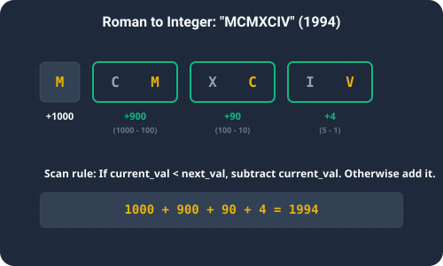

Introduction & Problem Explanation
The Roman to Integer problem asks us to convert a given Roman numeral string into its corresponding integer representation.
Roman numerals are represented by seven different symbols:
I (1), V (5), X (10), L (50), C (100), D (500), M (1000). They are written from largest to
smallest, left to right. However, there are six subtraction cases:
Iplaced beforeV(4) orX(9).Xplaced beforeL(40) orC(90).Cplaced beforeD(400) orM(900).

Imagine reading an old transaction ledger where values are entered. Usually, you just add each value you read to your total sum. However, there is a special rule: if you see a smaller amount listed right before a larger amount (such as a $1 service fee followed immediately by a $10 refund, labeled "IX"), it means subtraction. To account for this, as you read left to right, you look ahead to the next entry. If the next entry is larger than the current one, you subtract the current entry from your ledger. Otherwise, you add it. By applying this simple rule, you get the correct net total instantly!
The Algorithmic Approach
1. Map-Based Translation with Look-Ahead (O(n) Time, O(1) Space)
We use a HashMap to store the symbol-to-value associations. We iterate through the string from left to right:
- For each character at index
i, we fetch its value:currentValue. - If
i + 1 < stringLength, we also fetch the next character's value:nextValue. - If
currentValue < nextValue, it means we are encountering a subtractive combination (e.g.IVorIX). We subtractcurrentValuefrom our sum. - Otherwise, we add
currentValueto our sum.
O(n) time using constant O(1) auxiliary space since the map is of
a fixed size of 7 elements.
Step-by-Step Execution Walkthrough
Let's trace the look-ahead algorithm on the Roman numeral string s = "MCMXCIV" (which represents
1994):
- Step 1 (Initialization): Initialize
sum = 0. Length of string is7. - Step 2 (Index i = 0, Character 'M'):
- Value of 'M' =
1000. Next is 'C' =100. - Since
1000 >= 100, we add 1000:sum = 1000.
- Value of 'M' =
- Step 3 (Index i = 1, Character 'C'):
- Value of 'C' =
100. Next is 'M' =1000. - Since
100 < 1000, this is a subtractive combination. We subtract 100:sum = 1000 - 100 = 900.
- Value of 'C' =
- Step 4 (Index i = 2, Character 'M'):
- Value of 'M' =
1000. Next is 'X' =10. - Since
1000 >= 10, we add 1000:sum = 900 + 1000 = 1900.
- Value of 'M' =
- Step 5 (Index i = 3, Character 'X'):
- Value of 'X' =
10. Next is 'C' =100. - Since
10 < 100, subtract 10:sum = 1900 - 10 = 1890.
- Value of 'X' =
- Step 6 (Index i = 4, Character 'C'):
- Value of 'C' =
100. Next is 'I' =1. - Since
100 >= 1, add 100:sum = 1890 + 100 = 1990.
- Value of 'C' =
- Step 7 (Index i = 5, Character 'I'):
- Value of 'I' =
1. Next is 'V' =5. - Since
1 < 5, subtract 1:sum = 1990 - 1 = 1989.
- Value of 'I' =
- Step 8 (Index i = 6, Character 'V'):
- Value of 'V' =
5. This is the last character. We add 5:sum = 1989 + 5 = 1994.
- Value of 'V' =
- Step 9 (Completion): The iteration completes. We return the final value
1994.
Key Code Snippets & Explanations
Here is why the main logic in the solution is important:
if (i < s.length() - 1 && map.get(s.charAt(i)) < map.get(s.charAt(i + 1))): Detects if the current Roman numeral has a smaller value than the one following it, indicating a subtraction rule.sum -= map.get(s.charAt(i));: Correctly decrements the running total for subtractive cases like IV (5-1) or IX (10-1).sum += map.get(s.charAt(i));: Handles the standard additive case where values monotonically decrease or stay equal.
Java Implementation Code
Below is the complete, self-contained Java source code that solves this problem. It also includes a
main method that traces the execution with console outputs.
package io.practise.dsa;
import java.util.Map;
public class RomanToInteger {
// Optimized - O(n)
public int romanToInt(String s) {
Map<Character, Integer> map = Map.of(
'I', 1, 'V', 5, 'X', 10,
'L', 50, 'C', 100, 'D', 500, 'M', 1000
);
int sum = 0;
for (int i = 0; i < s.length(); i++) {
int val = map.get(s.charAt(i));
if (i + 1 < s.length() && val < map.get(s.charAt(i + 1))) {
sum -= val;
} else {
sum += val;
}
}
return sum;
}
public static void main(String[] args) {
RomanToInteger solver = new RomanToInteger();
String roman = "LVIII"; // 58
System.out.println("--- Roman to Integer Demonstration ---");
System.out.println("Roman Numeral: " + roman);
System.out.println("Converted Integer: " + solver.romanToInt(roman));
}
}
Conclusion
Solving the Roman to Integer problem highlights how we can leverage key data structures and algorithmic paradigms (like two pointers, hash maps, or dynamic programming) to significantly optimize runtime and simplify code complexity.